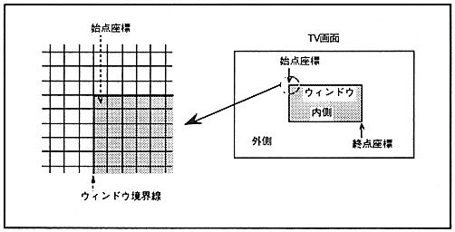

A normal rectangular window can be obtained by specifying the start point coordinates of the upper left corner and the end point coordinates of the lower right corner of the window in the window position register. The area enclosed by the specified coordinates is inside, and the other area is outside. The window border is considered inside.
∙ If the start point coordinate is larger than the end point coordinate in either the horizontal direction or the vertical direction, the entire screen will be judged as the area outside the window.
The normal rectangular window is shown in Figure 8.1.
Figure 8.1 Normal rectangular window
